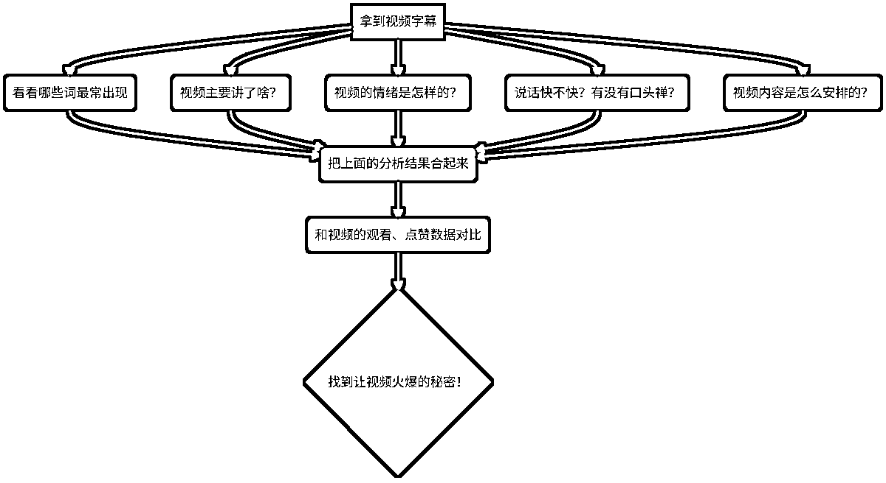
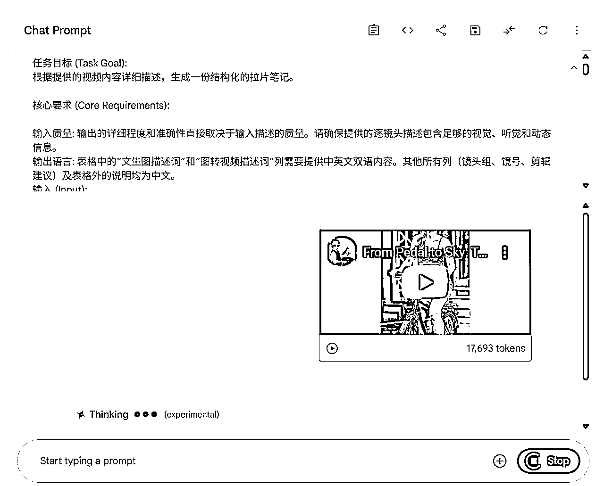

来源：https://txt6wm3b04b.feishu.cn/docx/L5KXdFjhdoLhguxFpqZceXD8nSd
大家好！我是你们的老朋友——越越，以下是我的介绍：
今年的分享重心是：“为小白打造可以复刻的精细化项目实操教程”；
这篇文章的核心主题是：10个Youtube应用开源分享Ai 赋能Youtube。
图、文、视频结合教学，推荐使用电脑阅读。
请注意：
文档配套讲解视频：
本章节是为了后续工具使用以及视频制作流程而设置，不是一开始就需要完成。
如需跳过该章节，请直接点击拆解对标方法，跳过该部分。
假设你进行到影刀RPA使用环节，那么你可以结合“安装影刀RPA自动化软件”进行环境设置。
以此类推，用到某个工具就去布置相应环境。
使用本文提及的工具，电脑系统务必满足以下要求：
尤其是使用Mac电脑的圈友，请仔细看以下操作流程：
第一步：在浏览器中打开https://www.qingjiaocloud.com/download/；
第二步：点击下载Mac版本安装包；
第三步：注册、登录云电脑客户端，开启Window系统的游戏主机或办公主机；
第四步：按照正常的Windows使用习惯进行使用；
特别注意：不使用时请注意关机，避免持续扣费；
该部分内容属于通用型安装教程，意味着不一定都需要使用。
使用建议：
Google Chorm可使用系统自带的Mice Edge浏览器下载。
第一步：打开https://www.google.cn/intl/zh-CN_ALL/chrome/fallback/，下载Google Chorm安装包。
第二步：地址栏中输入：chrome://extensions/，进入拓展程序，开启Google Chorm扩展程序开发者模式。
第三步：需要安装插件的时候，将插件的压缩包进行解压缩，点击界面左上角”加载已解压的扩展程序“导入插件。
影刀RPA是一个“低代码”自动化平台，适合零基础或者刚入门的程序小白使用。
第一步：在浏览器中打开https://www.yingdao.com/client-download/下载Windows版本的影刀软件，并安装。
第二步：通过闲鱼平台，搜索【影刀创业版账号】，购买并进行测试使用。
第三步：关闭Google Chorm浏览器，打开影刀软件点击界面右上角头像位置，选择“工具”，选择自动化插件，选择“Google Chorm自动化”，点击“安装”。

第五步：开启影刀RPA报错视频录制功能，出现报错的时候请将报错视频发送检查。
请遵照以下步骤设置相关权限：
第一步：打开https://open.feishu.cn/app?lang=zh-CN，登录飞书账号，创建新的“企业应用”。

第二步：点击界面左侧的“权限管理”，选择“开通权限”，输入“多维表格”，全选并开通权限，点击“确认开通权限”。
第三步：点击“凭证与基础信息”，获取App ID和App Secret，并保存至本地文件中。
飞书多维表格权限设置教学视频：
第四步：点击分享的多维表格模板链接，加载飞书模板文件： ，请点击“使用该模板”，获取多维表格模板。创建完多维表格副本后，点击“文档应用”，输入应用名称，并点击确认。
特别注意：使用了模板之后会创建副本，多维表格的名称可以修改，但是子表格里的名称请不要修改！


第五步：点击多维表格分享，获取分享链接。
提取分享链接：https://txt6wm3b04b.feishu.cn/base/*************?from=from_copylink中的******，请注意是提取base/******/?from中的*****，保存为“多维表格ID”。
第六步：整理归档所有参数。

特别注意：
如遇到飞书相关权限问题请访问：https://open.feishu.cn/
如遇到飞书节点转换问题请访问：https://open.feishu.cn/document/server-docs/docs/wiki-v2/space-node/get_node?appId=cli_a784f92850bfd00b
下载比特浏览器：https://www.bitbrowser.cn/download/
安装完毕后，请新建比特浏览器窗口，同时记录窗口ID号。
第一步：点击“创建窗口”；
第二步：根据需求设置参数（需要点击“换一换”）；
第三步：设置IP代理，请参考官方教程：https://doc2.bitbrowser.cn/help1.html
第四步：在各大窗口中登录Youtube网站，并将账号密码、窗口ID汇总进专用飞书多维表格中。
视频教程：
良好的文件归纳习惯可以帮助我们提高项目实操效率和质量。
下图是我做纪录片的文件目录结构，将原始文件上传至飞书中，确保本地和云端均有文件。
此外，我会将“合格”的素材与“不合格”的素材都会进行保存，为后续重组视频，实现素材自由。

下面这张图是我自己常用的项目文件架构图:
当我们不确定自己适合什么样的文件目录架构时,我们可以使用Deepseek帮助我们生成相应的文件目录架构.
我作为youtube小白，我该怎样去文件管理?
{推荐输入你的个人情况}
我需要归纳整理账号、素材、对标等等，但是我不清楚该怎样设置文件的目录结构，
请你帮我生成适合的文件目录架构（请直接使用markdown语言输出）。
Deepseek会根据提示词进行生成，我们也可以不断通过与Deepseek进行对话调整需求。
将生成的文件目录粘贴至下方程序中：
成品文件：
使用Youtube项目文件夹结构生成器会生成符合目录要求的文件夹：

在创建完成的文件夹中，我们可以按照项目的实际情况保存、管理相应文件。
以账号矩阵管理为例，我会将账号基本情况保存至飞书多维表格：
账号管理（飞书多维表格版）：

为每个场景设置单独的素材文档，并进行分类。
我通常会将一组提示词生成4张图，每张图会根据：镜头号_图片序号.jpg进行命名。
例如：1_4.jpg就代表第一个镜头的首帧生成了4张图可以供我们选择，这是第4张图。
如果产生了不合格的图片或者视频，也可以保存进素材文件夹中，日后可以进行再加工处理。
为了后续文件管理和自动化流程，建议按照以下要求规范文件命名。

便于自身更加高效使用素材和查找素材，也为后期使用自动化流程创作作品提升空间。

安装软件前，可以将默认安装位置与数据文件位置进行设置，可以参考文件目录进行设置。以“剪映”为例，剪映中的草稿、模板、素材均有相应的文件夹，将文件路径修改成相应的文件夹路径。
这样做的目的是为了更高效使用剪映模板、草稿库，便于后期迁移。
Youtube项目中文件种类多、数量多，为了提高制作视频的效率和视频质量。
因此我们需要对初次生成的文件进行备份，通常可以备份以下内容：
备份文件夹的设置请参考：生成目录结构

文件备份通常使用的平台有以下几种：
我们可以使用自动化的程序进行账号养号操作。
该程序支持：

特别声明：该程序中的部分源码借鉴于@钱塘江鲤，在前辈们的代码基础上进行优化，主要从可视化、参数设置、评论设置、多线程运行等方面进行。
程序成品：
程序源码：
第一步：首先打开比特浏览器，下载并解压文件至相应文件夹中，双击Youtube自动养号（shorts版）.exe程序，输入比特浏览器窗口ID号，并点击“添加”，下次重新运行程序则无需重复添加。

第二步：设置互动参数，可选择“使用预设”，点击相应预设即可自动设置参数。
另外可以点击“预设说明”查看预设模板的详细参数。

第三步：可选择性使用“启用评论功能”。
第四步：点击开始运行后，请确认配置参数，点击“确定”后会逐渐开启比特浏览器相应窗口。

特别注意：
本章节中，不提供现成的工具和源码，但是提供具体的思路。
打开指定的Youtube直播页面：
编写流程的视频教程：
具体可以使用影刀RPA中的魔法指令实现：
第一步：新建“魔法指令”，点击对话框下方的“获取元素”。
第二步：选择直播评论区框元素。

第三步：在对话框中输入需求。
{获取的评论区元素}实时监控采集评论区评论，并进行情感倾向判断，同时使用评论区内容的主要语言进行回复，{评论输入框元素}使用回车键发送，请模拟人类行为。
第四步：点击优化指令，进行指令优化。优化后，请发送指令，后期可以直接对话修改。
特别技巧：可以点击编辑源码，将源码复制进Cursor中进行需求编程，也可编写成独立程序。
复制的源代码可在Cursor中进行编辑、修改、运行，也可以生成本地应用程序：
“魔法指令”官方教程：https://www.yingdao.com/yddoc/rpa/711624635438841856
源代码示例如下：
# pip install pandas
# pip install openpyxl
# pip install textblob
import pandas as pd
import time
import random
import re
import datetime
from textblob import TextBlob
import keyboard
import os
from typing import *
try:
from xbot.app.logging import trace as print
except:
from xbot import print
def monitor_youtube_chat(browser, comments_container, reply_input, wait_min=30, wait_max=120, max_cycles=100, excel_path="chat_monitoring.xlsx"):
"""
title: YouTube聊天监控与回复
description: 监控YouTube直播评论区，进行情感分析，保存评论到Excel，并自动回复
inputs:
- browser (WebBrowser): 目标网页
- comments_container (Selector): `评论区`，uuid: sgu23ylq
- reply_input (Selector): `回复输入框`，uuid: sgwweqlj
- wait_min (int-textbox): 随机等待最小时间(秒)，eg: 30
- wait_max (int-textbox): 随机等待最大时间(秒)，eg: 120
- max_cycles (int-textbox): 最大监控循环次数，eg: 100
- excel_path (str-file): Excel文件保存路径，eg: "youtube_comments.xlsx"
outputs:
- None
"""
# 确保Excel文件存在，如果不存在则创建
_init_excel_file(excel_path)
print("1.初始化YouTube聊天监控")
print(f" a.将监控评论区并保存到 {excel_path}")
print(f" b.每次监控后等待 {wait_min}-{wait_max} 秒")
print(f" c.计划执行 {max_cycles} 次监控循环")
# 记录已处理的评论ID
processed_comments = set()
# 主监控循环
for cycle in range(1, max_cycles + 1):
print(f"\n2.开始第 {cycle}/{max_cycles} 轮监控")
# 切换到聊天iframe
_switch_to_chat_iframe(browser)
# 获取评论
print(" a.获取新评论")
comments = _get_new_comments(browser, comments_container, processed_comments)
if not comments:
print(" 未发现新评论")
else:
print(f" 发现 {len(comments)} 条新评论")
# 处理每条评论
for idx, comment_data in enumerate(comments):
print(f" b.处理评论 {idx+1}/{len(comments)}")
# 进行情感分析
sentiment = _analyze_sentiment(comment_data['text'])
comment_data['sentiment'] = sentiment['label']
comment_data['sentiment_score'] = sentiment['score']
# 生成回复
reply_text = _generate_reply(comment_data)
# 保存到Excel
_save_to_excel(excel_path, comment_data)
# 回复评论
if reply_text:
print(f" 回复 {comment_data['username']}: {reply_text}")
_reply_to_comment(browser, reply_input, reply_text)
# 添加到已处理集合
processed_comments.add(comment_data['id'])
# 随机等待一段时间
wait_time = random.randint(wait_min, wait_max)
print(f"3.等待 {wait_time} 秒后进行下一轮监控...")
time.sleep(wait_time)
print("\n4.监控完成")
print(f" 共处理了 {len(processed_comments)} 条评论")
print(f" 结果已保存到 {excel_path}")
def _init_excel_file(excel_path):
"""初始化Excel文件，如果不存在则创建"""
if not os.path.exists(excel_path):
df = pd.DataFrame(columns=[
'timestamp', 'id', 'username', 'text',
'sentiment', 'sentiment_score', 'reply'
])
df.to_excel(excel_path, index=False)
print(f"创建新的Excel文件: {excel_path}")
def _switch_to_chat_iframe(browser):
"""切换到聊天iframe"""
try:
# 执行JavaScript获取iframe并切换
browser.execute_javascript("""
function(element, args) {
const iframe = document.querySelector('iframe#chatframe');
if (iframe) {
return "success";
}
return "iframe not found";
}
""")
except Exception as e:
print(f"切换到iframe时出错: {str(e)}")
def _get_new_comments(browser, comments_container, processed_comments):
"""获取新的评论"""
comments = []
try:
# 找到评论容器
container_elements = browser.find_all_by_xpath(comments_container, timeout=3)
if not container_elements:
return comments
container = container_elements[0]
# 获取所有评论
comment_elements = container.find_all_by_xpath(".//yt-live-chat-text-message-renderer", timeout=3)
for comment_element in comment_elements:
# 获取评论ID
comment_id = comment_element.get_attribute("id")
# 如果已处理过，跳过
if comment_id in processed_comments:
continue
# 获取用户名
username_element = comment_element.find_all_by_xpath(".//span[@id='author-name']", timeout=3)
username = username_element[0].get_text() if username_element else "Unknown User"
# 获取评论内容
message_element = comment_element.find_all_by_xpath(".//span[@id='message']", timeout=3)
message = message_element[0].get_text() if message_element else ""
# 添加到结果列表
comments.append({
'id': comment_id,
'username': username,
'text': message,
'timestamp': datetime.datetime.now().strftime("%Y-%m-%d %H:%M:%S")
})
except Exception as e:
print(f"获取评论时出错: {str(e)}")
return comments
def _analyze_sentiment(text):
"""对评论文本进行情感分析"""
try:
# 使用TextBlob进行情感分析
analysis = TextBlob(text)
polarity = analysis.sentiment.polarity
# 确定情感标签
if polarity > 0.1:
return {'label': 'positive', 'score': polarity}
elif polarity < -0.1:
return {'label': 'negative', 'score': polarity}
else:
return {'label': 'neutral', 'score': polarity}
except Exception as e:
print(f"情感分析出错: {str(e)}")
return {'label': 'neutral', 'score': 0}
def _generate_reply(comment_data):
"""根据评论和情感生成回复"""
username = comment_data['username']
text = comment_data['text']
sentiment = comment_data['sentiment']
# 检测语言 (简单判断，如果包含拉丁字母以外的字符则可能是非葡萄牙语/西班牙语)
is_latin_based = all(c.isascii() or c.isspace() or c in "áàâãéèêíìîóòôõúùûçÁÀÂÃÉÈÊÍÌÎÓÒÔÕÚÙÛÇ,.!?;:-_()[]{}\"'/" for c in text)
# 根据情感和内容选择回复模板
replies = {
'positive': [
f"Valeu {username}! 👍",
f"Concordo com você, {username}!",
f"Boa observação, {username}!",
"Muito obrigado pelo comentário positivo!",
"É isso aí! 🔥"
],
'negative': [
f"Entendo seu ponto, {username}.",
"Obrigado por compartilhar sua opinião!",
"Interessante perspectiva...",
"Vamos pensar sobre isso.",
"Respeito sua opinião! 👍"
],
'neutral': [
f"Olá {username}, obrigado pelo comentário!",
"Valeu por participar do chat!",
"Legal! 👍",
"Obrigado por estar aqui!",
"Entendi! 👀"
],
'command': [
"Comando registrado! 👍",
"Anotado!",
"👌"
]
}
# 检查是否是命令(!开头)
if text and text[0] == '!':
return random.choice(replies['command'])
# 对于空消息或特殊情况，不回复
if not text or len(text) < 2:
return ""
# 根据情感选择回复
return random.choice(replies[sentiment])
def _save_to_excel(excel_path, comment_data):
"""保存评论数据到Excel"""
try:
# 读取现有Excel
if os.path.exists(excel_path):
df = pd.read_excel(excel_path)
else:
df = pd.DataFrame(columns=[
'timestamp', 'id', 'username', 'text',
'sentiment', 'sentiment_score', 'reply'
])
# 添加新行
new_row = {
'timestamp': comment_data['timestamp'],
'id': comment_data['id'],
'username': comment_data['username'],
'text': comment_data['text'],
'sentiment': comment_data['sentiment'],
'sentiment_score': comment_data['sentiment_score'],
'reply': comment_data.get('reply', '')
}
df = pd.concat([df, pd.DataFrame([new_row])], ignore_index=True)
# 保存回Excel
df.to_excel(excel_path, index=False)
print(f" 评论已保存到Excel")
except Exception as e:
print(f"保存到Excel时出错: {str(e)}")
def _reply_to_comment(browser, reply_input, reply_text):
"""在输入框中回复评论"""
try:
# 找到回复输入框
input_elements = browser.find_all_by_xpath(reply_input, timeout=3)
if not input_elements:
print(" 未找到回复输入框")
return
input_container = input_elements[0]
# 找到可编辑的div
editable_div = input_container.find_all_by_xpath(".//div[@contenteditable]", timeout=3)
if not editable_div:
print(" 未找到可编辑div")
return
# 清空现有内容并输入新回复
editable_div[0].click(delay_after=0.3)
# 清空内容 (使用键盘组合键Ctrl+A和Delete)
browser.execute_javascript("""
function(element, args) {
const div = document.querySelector('div[contenteditable]');
if (div) {
div.textContent = '';
return "cleared";
}
return "div not found";
}
""")
# 输入回复
editable_div[0].input(reply_text, delay_after=0.3)
# 按回车发送
keyboard.press_and_release('enter')
time.sleep(1) # 等待消息发送
except Exception as e:
print(f"回复评论时出错: {str(e)}")
使用浏览器访问Youtube热门数据检索网站：https://www.viewstats.com/。

在viewstats中，我们能够得到：

在viewstats中，我们还能够得到：
特别注意：viewstats中的YPP收益仅供参考。

在viewstats中，支持指定Channel进行检索。

我们可以使用影刀RPA软件，对符合指定条件的viewstats平台数据进行采集、分析、再利用。
筛选以下条件：
具体操作如下：
第一步：根据下图操作步骤，设置相应的筛选条件，完成后保持页面不变。
特别注意：请登录网站，请保持页面是英文状态（不要翻译成中文）。


第二步：获取影刀RPA程序
本地excel版：https://api.winrobot360.com/redirect/robot/share?inviteKey=df93f45a5a3638a5
飞书多维表格版：https://api.winrobot360.com/redirect/robot/share?inviteKey=da083b1445b60e69
可根据自身情况和需求选择其中一项程序。
第三步：进入影刀RPA软件左侧功能栏，点击“我获取的应用”，运行程序。
程序中所涉及的飞书相关数据请参考设置飞书权限。
注意事项：请输入筛选完成后的网址！
下图演示的是本地excel版。
TOP100 Videos文件：
包含字段：视频标题、上传时间、视频链接、视频缩略图url、视频总观看次数、点赞数、评论数、每小时观看次数、预计收入、订阅者数量、总观看次数、频道视频总数，尤其包括互动率、综合评分。
其中互动率和综合评分可以作为筛选榜单视频的主要依据。

我们可以在影刀软件中设置定期执行任务。
我们需要对Video相关榜单重点分析，把Top榜单中的数据信息进行拆解，然后拓展延伸，再采集相应数据。

根据数据筛选出“潜在的对标视频”，然后进入viewstats中查看相关数据，并使用Ai进行可视化解读。

第一步：点击相应的视频链接，进入数据详情页，并截取、整理相关区域数据。

第二步：将视频的viewstats数据详情页截图，投喂给Gemini工具，Gemini根据提示词和截图中的数据，给出初步的分析报告。
请基于上传的YouTube频道的ViewStats截图数据，执行以下任务：
生成一份单页HTML《[频道名称]视频数据分析报告》。
**报告基本要求：**
* **报告语言**： 中文。
* **整体风格**： 专业、数据驱动、分析性强。
* **数据来源**： 严格基于所提供的截图数据进行分析，不涉及内容主题分析。
**报告核心内容：**
1. **频道概览**：
* 清晰展示总订阅数、总观看次数、视频总数等核心整体数据。
2. **近期表现（例如过去28天）**：
* 详细列出并分析近期的观看次数（及其与上一周期的对比，如“+100%”）。
* 详细列出并分析订阅数变化（包括净增长和与上一周期的对比，如“较上个周期新增订阅减少XX”）。
* 展示预估收入。
* 分析不同内容格式（如Shorts vs 长视频）的观看表现。
3. **数据趋势可视化**：
* 使用条形图展示每日观看次数变化（基于截图中的每日数据）。
* 使用折线图展示每日订阅总数变化趋势。
* 使用条形图展示每日新增订阅数。
* **图表布局与样式补充要求：**
* **响应式布局**：在小屏幕（如手机）上，图表应单列堆叠显示。在中等屏幕（如平板电脑）及更大屏幕（如桌面电脑）上，图表应以**两列网格**的形式展示，每行最多容纳两个图表。
* **图表高宽比**：为避免图表显得过高或过窄，请确保图表的**宽度约为其高度的2至2.5倍**。可以参考 `image_6c4264.png` 中图表的视觉比例。
* **图表容器**：每个图表应放置在一个带有浅灰色边框和圆角的容器内，容器内部应有适当的内边距。
* 确保所有图表清晰易懂，包含标题、坐标轴标签，并且图表内的文字（如图例、坐标轴数值）也为纯黑色。
4. **核心指标分析**：
* 计算并解读“平均每视频观看次数”，并指出可能的影响因素（如爆款Shorts）。
* 计算并解读“观看-订阅转化效率”（例如，每多少次观看带来一个新订阅），并评估其效率。
* 分析“内容格式表现”，明确指出哪种格式是主要流量来源。
* 解读“近期增长趋势”，包括观看次数和订阅数的增长势头，并点出任何增长速率的变化或潜在波动。
* 分析“最新视频表现”（如果数据中包含此类信息，如“近期10个视频中的排名”）。
5. **对标建议（数据角度）**：
* 提供选择对标频道时应考虑的具体数据维度，例如：相似的订阅者规模范围、总观看量级范围、视频数量范围、主要内容格式（强调Shorts对标的重要性）、以及相似的增长率指标。
6. **总结与数据驱动的建议**：
* 对频道当前数据状况进行简明扼要的总结。
* 提出具体、可操作的数据驱动建议，例如：如何根据数据优化Shorts策略、如何应对订阅增长波动、是否以及如何谨慎探索其他内容格式（如长视频）、如何监控和应对每日数据波动、如何提升新视频表现稳定性等。
**报告格式与功能：**
* **单页HTML**：所有内容整合在一个HTML文件中。
* **纯黑色字体**：报告中的所有主要文本内容（标题、段落、列表项等）均使用纯黑色字体。允许使用语义化颜色（如绿色表示增长，红色表示下降）来突出显示特定数据点。
* **重点内容加粗**：报告中的关键数据、核心发现、重要结论和建议等，请使用粗体进行强调。
* **下载功能**：在页面显著位置提供一个“下载报告 (PNG)”的按钮，点击后可以将整个报告内容（包括图表）下载为一张PNG图片。
* **响应式设计**：确保报告在桌面和移动设备上均有良好的阅读体验。
* **CSS框架**：优先使用Tailwind CSS进行样式设计。
* **图表库**：使用Chart.js生成图表。
* **图片下载库**：使用html2canvas.js实现下载报告为PNG的功能。
参考影刀RPA获取应用教程，获取以下应用。
第一步：浏览器打开https://api.winrobot360.com/redirect/robot/share?inviteKey=c685d34b806c6929
第二步：将下方的数据模板文件下载至指定文件夹中。
点击飞书链接，获取相应的飞书模板文件。
飞书模板文件：
Excel模板文件：
特别注意：如需修改子表格中名称，请在应用中也同步修改。

第三步：右键点击程序，点击“运行采集程序”（程序名为：video详情采集（单频道采集））
特别注意：
1.在正式运行程序前，请务必完成飞书多维表格权限设置。
2.请检查对应的两张数据表名称是否与多维表格中的名称对应（上图中有展示表格名称）。
3.请谨慎设置采集数量，一般情况下默认设置50条。
4.采集成果分别有本地Excel文件（本地存档）、飞书多维表格（Ai分析）。
5.尽量选择“记住内容”，确保下次使用时不需重新输入参数。
6.飞书模板文件： ，只需获取一次即可。
第四步：等待数据采集完成。在采集过程中，请不要使用键盘鼠标。如果报错，会在这部分区域显示报错信息，请重试三次，依然有报错信息，请将报错信息分享给我解决、优化。
第五步：我们将会得到本地Excel文件、飞书多维表格文件。
以下是输出的成果：
第一步：打开浏览器，获取RPA程序：https://api.winrobot360.com/redirect/robot/share?inviteKey=94f85f5445d22b3b
第二步：点击运行程序，输入相关参数。批量采集版本需要上传需要采集的“批量频道号”，可自建Excel表格，从A2单元开始在A列处输入频道号（不包含）并保存。
特别注意：
1.批量采集时尽量控制5个频道内，请勿频繁操作，避免被风控。
2.请正确输入飞书多维表格参数，批量采集和单频道采集均保存至同个飞书多维表格，频道名进行区分。
在Youtube中的标题展现通常有三种形式：
标题设计目的：
因此，标签中的核心关键词需要显而易见、易于理解。
Ai分析标题：
我们可以告诉Gemini、Deepseek等Ai工具，以下是提示词：
请分析YouTube视频标题-“视频标题”中存在的核心关键词，同时输出五个可拓展的二级核心关键词。
我以前文中提到的案例进行演示分析：
请分析YouTube视频标题-“Do you have a cat? 🥹 #animatedstories #meme #indiananimation"”中存在的核心关键词，请输出五个可拓展的二级核心关键词。
Gemini生成的答复是：
综合来看，最能概括视频内容和形式的关键词是：
考虑到通常会选取一个最主要的，并且标题以“猫”为直接切入点，我们可以把 猫 (Cat) 作为最主要的核心关键词。但为了更全面的描述，结合形式的关键词也非常重要。
考虑到输出一个核心关键词并拓展的要求，我们选取猫作为最主要的起点。
核心关键词：
可拓展的二级核心关键词：
基于核心关键词“猫”以及标题中的其他重要信息（动画故事、模因、印度动画、以及潜在的可爱/情感/搞笑内容），我们可以拓展出以下五个可拓展的二级核心关键词：
我看了几十万条对标视频，我觉得“一个好的描述能够让我更加快速了解视频”，从而赢得观众好感。

左图中的描述是简要版描述，右图中是详细版描述。
大多数优秀视频在描述中的前面三行就已经能够达到“留住观众”“点明主题”的作用。
拆解描述时应该重点关注——前面几句描述词。
我们可以告诉Gemini、Deepseek等Ai工具以下提示词：
请分析YouTube视频描述中“描述部分"”中开头存在的核心关键词，请输出五个可拓展的二级核心关键词。
在YouTube上传视频的界面中支持输入“描述”，当输入#标签时会自动弹出选择推荐标签提示。

Youtube中标签通常带有“#”，例如“#animatedstories #meme #indiananimation”，“#”后面的词汇就属于标签。“标签”可以理解为：符合条件的一类视频，和关键词很像，作用也很重要。
“标签”一般出现在标题、描述中。
我们还可以通过使用“标签”在Youtube搜索栏中进行搜索。
最重要、最符合的标签放在前面，后面依次按照重要性进行布局。
上面右图中，在飞书多维表格模板中，Ai也会自动提取描述和标题中的标签。
Youtube平台作为视频内容创作平台，字幕功能同样很重要！
今天重点讲解——“如何下载视频中的字幕文件？”
提取视频中的字幕文件通常需要和下载视频文件结合在一起。
工具链接：https://yt.savetube.me/zh/29-youtube-video-downloader-5djdh6

在提取完视频中的“字幕文件”后，我们依然需要对字幕文本内容进行“爆款因子”提取。
要从字幕文本中找出潜在的“爆款因子”，你需要对这些文本进行进一步的分析。

我会告诉Gemini、Deepseek等Ai以下提示词：
任务目标 请根据提供的YouTube视频字幕文本（含时间戳），分析并识别潜在的「爆款因子」，输出结构化洞察报告。 输入数据 字幕文本（含时间戳，若可用） （可选）视频表现数据（观看量、互动量等） 分析步骤 1. 关键词与主题提取 统计高频词/短语，按频率排序 关联当前流行趋势，标注潜在热门话题 （多视频对比时）区分爆款与非爆款的关键词差异 用NLP提取核心主题（1-3个） 2. 情感与表达分析 判断整体情感倾向（积极/消极/中立） 标注显著情感片段（幽默、争议性、激动等） 识别促互动的表达特征（如口头禅、反问句） （可选）结合时间戳分析语速与内容吸引力关联 3. 内容结构解析 划分内容模块（引言/论点/案例/结论） 标注提升留存的结构特征（如悬念设置、节奏变化） 4. 数据关联与因子提炼 （若有表现数据）计算字幕特征与观看/互动量的相关性 归纳高关联性「爆款因子」（如：特定关键词+幽默表达+悬念结构） 输出要求 关键词清单：Top 10高频词+频率 核心主题：简明概括（不超过3个） 情感分析：倾向比例+典型片段示例 结构特点：模块分布+亮点设计 爆款因子：按优先级列出，附具体解释 [请输入字幕文本内容]
在评论区里我们通常能够看到一些网友在“针对视频中的某个细节，开展激烈的讨论”，
那么就说明这条视频激发了观众的情绪，有了情绪！视频就有可能会成为爆款作品。
一般会从直播间和Shorts、Videos中的评论中去感知观众真正的需求。

可以将以下提示词发送给Gemini、Deepseek等Ai中：
请对一个 YouTube 视频的评论区进行深度分析，目标是识别出促成该视频成为“爆款”的核心因子。分析应侧重于观众的直接反应、互动模式和社群讨论，并结合视频本身的表现数据。请按照以下步骤进行分析： 评论中的高频词和话题识别： 1.识别评论区中出现频率最高的词语、短语和讨论主题。 2.分析这些高频内容是否与视频的特定片段、内容高潮（“爆点”）或核心话题紧密相关。 3.探讨这些高频词和话题如何反映观众对视频内容的关注点和兴趣点。 情感和情绪分析： 1.分析评论的整体情感倾向（例如，积极、消极、中立）。 2.特别关注表达强烈情感（如惊喜、愤怒、欢乐）的评论，以及其中使用的网络流行语或感叹词。 3.评估观众的集体情绪如何影响评论区的氛围和互动。 互动模式分析： 1.分析评论的点赞量、回复数量以及由此形成的讨论串。 2.识别高互动率的评论或讨论串，分析其内容为何能引发大量互动。 3.观察观众之间的互动模式（例如，是观点交流、提问解答还是情绪表达）。 评论量和增长速度分析： 1.关注视频发布后评论数量的增长趋势，特别是是否存在评论量快速增长或出现峰值的时段。 2.分析评论量异常增长是否与视频发布、内容特点或外部事件有关。 3.讨论高评论量本身作为“爆款”因子的意义。 问题和反馈收集： 1.从评论中收集观众提出的问题、针对视频内容的正面赞美以及建设性的批评意见。 2.分析这些问题和反馈反映了观众的哪些需求、困惑或对视频的认可点/改进建议。 3.评估这些直接反馈如何体现观众的参与度和对视频质量的评价。 结合视频表现数据进行综合分析： 1.将以上评论分析的结果与该视频的其他表现数据（如观看时长、观看量、分享量、点赞/点踩比例、观众留存率等）相结合。 2.探讨评论分析的结果如何印证或补充视频表现数据所揭示的信息。 3.综合所有分析维度，最终提炼出该视频之所以成为“爆款”的核心评论区因子和观众互动模式。 4.请生成可视化的单网页的数据报告。 [请输入采集到的数据文件]
Youtube作为视频内容的创作平台，那么视频内容本身质量、内容领域就会在很大程度上影响视频流量。
对视频内容质量分析，可以从视频封面、视频关键帧、制作脚本中进行分析。
第一步：分析视频封面图
视频封面通常可以通过直接截图进行获取，然后把视频封面发送给Gemini等支持图片识别Ai进行分析。
具体的提示词如下：
请分析这个youtube的封面图，重点分析： 1.请描述图片中的内容。 2.请分析图片中的爆款因素。 3.请输出能够复刻这个封面图的提示词（中英文）。
Gemini的分析结果如下：

例如我将封面图上传给Gemini对话框后，我让Gemini帮我分析这张封面图，Gemini返回的结果如下：
这张图片是一幅卡通风格的插画。画面主体是一位人物，看起来像是一位女性，留着深色头发，穿着一件紫色的、类似印度纱丽的传统服饰，并佩戴着一条项链。她面部表情夸张，眉毛上扬，眼睛睁大，嘴巴紧闭，显得有些恼火或无奈。背景是模糊的室内场景，可以看到一些植物的轮廓。图片上方叠加了一块黑色矩形，上面有白色文字：“POV life of a cat in a desi house”。
这张封面图包含了一些可能使其成为“爆款”的因素：
以下是能够复刻这张封面图的提示词（适用于 Midjourney, DALL-E 等图像生成AI）：
A humorous cartoon illustration of a person, possibly a woman, with dark hair, wearing a vibrant purple sari and a simple necklace. They have an exaggerated expression of annoyance or exasperation, with wide eyes and raised eyebrows. The style should be clean and bold, with thick outlines. The background is a blurred indoor scene with hints of green plants, suggesting a home environment. The overall mood is lighthearted and comedic. --v 5.2
第二步：分析视频关键帧
使用以下程序可以单独或者批量提取视频关键帧，请将下列压缩包解压在相应的文件夹中，请注意不要删除、挪动任何一个文件。
Exe成品文件：
源代码文件：
解压完毕后，请双击批量提取视频关键帧.exe，按照需求选择相应的模式，可以使用文件命名模板进行规范命名。
导出视频关键帧后，从文件中挑选最具代表性的图片进行Ai分析。
通常使用Gemini、豆包、GPT4、Midjourney等Ai工具进行提示词反推。

图生文提示词如下：
请你根据上传的图片，进行“图生文”，反推文生提示词， 重点关注关键元素、构图、材质、风格，适合使用Ai图像重新创建。 输出格式要求：每次输出三组提示词。 1.每组包含中文和英文。 2.提示词需简洁，符合文生图规则，能生成高质量图像。 3.英文提示词使用 txt 代码块。 4.中文提示词也使用 txt 代码块。
第三步：分析视频脚本
打开Google stdio：https://aistudio.google.com/prompts/new_chat ，上传Youtube视频链接。
分析脚本的提示词如下：
任务目标 (Task Goal): 根据提供的视频内容，生成一份详细的拉片笔记。 输入 (Input): 请提供视频的内容信息。这可以是： 详细的镜头列表或脚本。 对视频内容的逐个镜头的详细描述。 输出格式 (Output Format): 输出将是一个包含以下列的表格，语言为中文： | 镜头组 (Shot Group) | 镜号 (Shot Number) | 文生图描述词 (Text-to-Image Description) | 图转视频描述词 (Image-to-Video Description) | 剪辑建议 (Editing Suggestions) | 生成规则 (Generation Rules): 镜头组编织原则 (Shot Grouping Principles): 短镜头时长不超过 5 秒。 长镜头时长不超过 10 秒。 一个短镜头组包含不超过 2 个分镜。 一个长镜头组包含不超过 5 个分镜。 请在表格的“镜头组”列中标记镜头所属的组别。 文生图描述词原则 (Text-to-Image Description Principles): 画面内容: 使用连贯自然的语言描述画面核心内容（主体、行为、环境、道具等）。 画面美学: 使用简洁的短词语描述画面美学特征（风格、色彩、光影、构图等）。 关键帧: 描述该镜头起始关键帧（或最代表性帧）的主要画面元素。 示例: (一只白色的大胖猫，在躺椅上戴着墨镜，手拿酒杯躺着晒太阳，身上盖着浴巾，背景是大海。) (夏日，悠闲，趣味，特写) 图转视频描述词原则 (Image-to-Video Description Principles): 包含以下要素：时长、景别、运镜、画面动态或关键描述。 景别: 使用标准术语，如：远景、全景、中景、近景、特写、大特写等。 运镜: 使用标准术语，如：推、拉、摇、移、跟拍、升、降、旋转等。 示例: (3s，中景，人物缓慢向右移动，镜头平移跟拍，画面充满动感) 或 (5s，特写，镜头缓慢向前推进，展现紧张气氛，景深变化) 剪辑建议原则 (Editing Suggestions Principles): 识别和描述该镜头或镜头组中主要的背景音乐 (BGM)。 识别和描述重要的音效 (Sound Effects)。 可以包含转场建议、节奏建议等。 示例 (Examples): 文生图描述词示例: (一只白色的大胖猫，在躺椅上戴着墨镜，手拿酒杯躺着晒太阳，身上盖着浴巾，背景是大海。) (夏日，悠闲，趣味，特写) 图转视频描述词示例 (或镜头分镜描述示例): (3s，夜晚，云雾笼罩的古寺前，黑衣侠客与白衣侠客面对面抱拳站立，背后破损的屋檐挂着晃动的铜铃。镜头缓慢向前推进，展现紧张气氛。) 单镜头详细描述示例 (可用于填充 文生图/图转视频 描述): 镜头1 (5s)：面部特写，展现男子深邃的眼神和自信微笑。暖光打在脸部轮廓上，背景虚化。画面具有艺术感。 (结合了文生图和图转视频的要素) 镜头2 (2s)：聚焦镜头缓慢推进男子抬起的手腕。手表在光影中闪耀，细节清晰展现成功人士品味。 镜头3 (2s)：侧面拍摄，光影在脸上和背景墙上形成鲜明对比。人物轮廓分明，充满高级感和张力。
使用Youtube链接：https://www.youtube.com/shorts/hSNT_dZoWiA ，进行演示。

在Gemini结束思考后，将会输出以下结果：

打开@PyangJoeBapAI频道主页：https://www.youtube.com/@PyangJoeBapAI
第一步：观察频道详细信息（重点观察Video、Shorts区域视频信息）。
可参考以下特征观察Shorts视频：
请务必遵从自己的“第一感觉”。
第二步：打开viewstats平台，在搜索框中输入“PyangJoeBapAI”，进入相应频道查看频道数据、Shorts数据。
第三步：将这些包含频道数据的截图投喂给Gemini，同理也可将单个视频的数据截图给Gemini，需要开启额外的Canvas功能，得到的分析成果（仅供参考）。
请基于上传的YouTube频道的ViewStats截图数据，执行以下任务：
生成一份单页HTML《[频道名称]视频数据分析报告》。
**报告基本要求：**
* **报告语言**： 中文。
* **整体风格**： 专业、数据驱动、分析性强。
* **数据来源**： 严格基于所提供的截图数据进行分析，不涉及内容主题分析。
**报告核心内容：**
1. **频道概览**：
* 清晰展示总订阅数、总观看次数、视频总数等核心整体数据。
2. **近期表现（例如过去28天）**：
* 详细列出并分析近期的观看次数（及其与上一周期的对比，如“+100%”）。
* 详细列出并分析订阅数变化（包括净增长和与上一周期的对比，如“较上个周期新增订阅减少XX”）。
* 展示预估收入。
* 分析不同内容格式（如Shorts vs 长视频）的观看表现。
3. **数据趋势可视化**：
* 使用条形图展示每日观看次数变化（基于截图中的每日数据）。
* 使用折线图展示每日订阅总数变化趋势。
* 使用条形图展示每日新增订阅数。
* **图表布局与样式补充要求：**
* **响应式布局**：在小屏幕（如手机）上，图表应单列堆叠显示。在中等屏幕（如平板电脑）及更大屏幕（如桌面电脑）上，图表应以**两列网格**的形式展示，每行最多容纳两个图表。
* **图表高宽比**：为避免图表显得过高或过窄，请确保图表的**宽度约为其高度的2至2.5倍**。可以参考 `image_6c4264.png` 中图表的视觉比例。
* **图表容器**：每个图表应放置在一个带有浅灰色边框和圆角的容器内，容器内部应有适当的内边距。
* 确保所有图表清晰易懂，包含标题、坐标轴标签，并且图表内的文字（如图例、坐标轴数值）也为纯黑色。
4. **核心指标分析**：
* 计算并解读“平均每视频观看次数”，并指出可能的影响因素（如爆款Shorts）。
* 计算并解读“观看-订阅转化效率”（例如，每多少次观看带来一个新订阅），并评估其效率。
* 分析“内容格式表现”，明确指出哪种格式是主要流量来源。
* 解读“近期增长趋势”，包括观看次数和订阅数的增长势头，并点出任何增长速率的变化或潜在波动。
* 分析“最新视频表现”（如果数据中包含此类信息，如“近期10个视频中的排名”）。
5. **对标建议（数据角度）**：
* 提供选择对标频道时应考虑的具体数据维度，例如：相似的订阅者规模范围、总观看量级范围、视频数量范围、主要内容格式（强调Shorts对标的重要性）、以及相似的增长率指标。
6. **总结与数据驱动的建议**：
* 对频道当前数据状况进行简明扼要的总结。
* 提出具体、可操作的数据驱动建议，例如：如何根据数据优化Shorts策略、如何应对订阅增长波动、是否以及如何谨慎探索其他内容格式（如长视频）、如何监控和应对每日数据波动、如何提升新视频表现稳定性等。
**报告格式与功能：**
* **单页HTML**：所有内容整合在一个HTML文件中。
* **纯黑色字体**：报告中的所有主要文本内容（标题、段落、列表项等）均使用纯黑色字体。允许使用语义化颜色（如绿色表示增长，红色表示下降）来突出显示特定数据点。
* **重点内容加粗**：报告中的关键数据、核心发现、重要结论和建议等，请使用粗体进行强调。
* **下载功能**：在页面显著位置提供一个“下载报告 (PNG)”的按钮，点击后可以将整个报告内容（包括图表）下载为一张PNG图片。
* **响应式设计**：确保报告在桌面和移动设备上均有良好的阅读体验。
* **CSS框架**：优先使用Tailwind CSS进行样式设计。
* **图表库**：使用Chart.js生成图表。
* **图片下载库**：使用html2canvas.js实现下载报告为PNG的功能。
从下图的成果中，我可以得到

使用采集Shorts视频数据的影刀RPA进行内容采集，主要采集标题、描述、评论区内容等。
第一步：运行名为采集频道Shoerts视频信息（单次采集)的应用程序，获得飞书文档内容更新。
第二步：可从飞书多维表格中导出csv表格投喂给其他Ai进行分析，也可以直接在多维表格中进行查看。
成果文件如下：
普通版：可将上述文件投喂给Ai进行内容分析，投喂提示词如下：
我给你提供视频标题中的关键词、描述中的关键词、评论区中的需求、视频标签，请帮我分析，输出对标建议。
进阶版（使用Cursor3.7分析）：
将数据excel表格投喂给cursor： 角色： 数据分析师与可视化报告生成器 任务： 基于提供的 YouTube Shorts CSV 数据文件进行深入分析，生成数据洞察报告，提出优化建议以提升流量。将报告以美观、响应式的单网页形式呈现，支持 PNG 下载。 预处理与数据清洗： 在分析前对CSV数据进行专业的数据清洗： 处理编码问题，尤其是中文和特殊字符； 处理缺失值、异常值和重复数据； 统一数据格式（数字、日期、文本等）； 规范化文本字段，如标签和关键词； 创建派生变量（如互动率 = 点赞数/观看量）； 记录清洗过程和结果。 输入数据： 数据源： CSV 文件，单位为“次”； CSV 字段： 作者信息 数据采集时间 视频标题 视频标签 (核心分析字段) 标题中的核心关键词 (核心分析字段) 频道类型 频道链接 点赞数 (互动数据) 观看量 (观看量数据) 评论数 (互动数据) 视频描述 描述核心关键词 (核心分析字段) 评论情况 评论区需求提取 (核心分析字段) 核心分析要求： 数据关联分析： 分析 视频标签 与 观看量、点赞数、评论数 之间的关系，识别高效和低效标签； 分析 标题中的核心关键词 与 观看量、点赞数、评论数 之间的关系； 分析 描述核心关键词 与 观看量、点赞数、评论数 之间的关系； 分析 评论区需求提取 与观看量和互动数据的潜在关联。 模式识别： 找出高表现视频的共同特征，特别是在标签、标题和描述字段中的关联； 识别低表现视频中的缺陷或问题，并与高表现视频进行对比。 量化分析框架： 关键词效能量化： 关键词效能指数(KEI) = (平均观看量 × 0.6) + (平均点赞数 × 0.3) + (平均评论数 × 0.1)； 关键词位置影响系数(KPI) = 标题前10字符出现时的平均观看量 ÷ 标题后半部分出现时的平均观看量； 关键词组合效应(KCE) = 关键词组合出现时的平均观看量 ÷ 关键词单独出现时的平均观看量； 提供TOP 20高效关键词及其KEI值。 标签效果量化： 标签效能指数(TEI) = (平均观看量 × 0.5) + (平均互动率 × 0.5)，其中互动率 = (点赞数 + 评论数) ÷ 观看量； 标签组合效应(TCE) = 特定标签组合的平均观看量 ÷ 整体平均观看量； 标签饱和度影响(TSI) = 不同标签数量的视频观看量对比； 提供TOP 15高效标签及其TEI值。 标题结构效果评估： 标题结构指数(TSI) = 按结构类型分类的平均观看量； 标题长度影响(TLI) = 不同标题长度区间的观看量与完播率对比； 表情符号影响系数(ESI) = 含表情符号标题的平均观看量 ÷ 不含表情符号标题的平均观看量； 列出TOP 5最佳标题结构模板。 描述结构效果评估： 描述结构效能(DSE) = 按描述模式分类的平均互动率； 描述-标题一致性(DTI) = 描述与标题关键词一致性高的视频的观看量 ÷ 一致性低的视频的观看量； 描述长度影响(DLI) = 不同描述长度的互动率对比； 提供TOP 3最佳描述结构模板。 受众群体分析： 内容类型偏好指数(CPI) = 特定内容类型的平均观看量 ÷ 整体平均观看量； 受众互动倾向(AEP) = 特定内容类型的互动率 ÷ 平均互动率； 受众忠诚度指标(ALI) = 频道多个视频的观看量一致性； 提供TOP 5受众最喜爱内容类型。 综合效果评分系统： 视频综合效能分数(VEPS) = (观看量得分 × 0.4) + (互动率得分 × 0.3) + (完播率得分 × 0.3)； 所有得分均使用0-100标准化计分，100代表最大值； 提供视频效能分级：S级(90-100)、A级(75-89)、B级(60-74)、C级(40-59)、D级(<40)。 对标建议： 基于量化分析，提供优化建议： 推荐高效 视频标签 组合； 提供吸引流量的 视频标题 关键词策略和结构模板； 优化 视频描述； 根据 评论区需求提取 调整内容方向。 输出要求 (内容版报告)： 洞察总结： 总结关键发现，提供具体数据支持每个结论。 对标建议： 列出优化建议，明确数据支持和操作步骤。 数据支撑： 报告中的每个结论和建议需有明确的数据支持。 输出要求 (可视化单网页)： 技术栈： HTML, CSS, JavaScript； 布局设计： 两列对齐布局，最多每行两个图表； 确保图表与表格对齐，并支持单列自适应布局； 内容呈现： 直观展示标签、关键词与观看量/互动数据关系； 展示关键量化指标的排名和对比图表； UI/UX设计： 响应式设计，兼容桌面、平板、手机； 界面简洁、专业、美观，突出重点内容； 功能性： 提供PNG下载按钮。 示例强调样式： "cute"关键词KEI值为87.3，使用可提升观看量42% 标签组合"#shorts + #funny + #cute"的TCE值为2.4，预期推荐量提升140% 超过8个标签的视频TSI值降低0.76，推荐量减少18% 最终交付： 包含上述可视化报告的HTML文件代码，并提供可操作的建议。
得到以下一部分的成果节选，从成果中我们可以清楚看到已经提取出了合格的标签。

第三步：从数据分析中选出合适的视频，进行视频脚本分析。
打开Google stdio：https://aistudio.google.com/prompts/new_chat ，上传Youtube视频链接。
特别注意：一个对话中只支持上传一条Youtube视频链接。

分析脚本的提示词如下：
任务目标 (Task Goal): 根据提供的视频内容详细描述，生成一份结构化的拉片笔记。 核心要求 (Core Requirements): 输入质量: 输出的详细程度和准确性直接取决于输入描述的质量。请确保提供的逐镜头描述包含足够的视觉、听觉和动态信息。 输出语言: 表格中的“文生图描述词”和“图转视频描述词”列需要提供中英文双语内容。其他所有列（镜头组、镜号、剪辑建议）及表格外的说明均为中文。 输入 (Input): 请提供对视频内容的逐个镜头的详细文字描述。每个镜头的描述应包含但不限于： 视觉元素: 核心主体、人物行为、表情、服装、道具、环境、背景、光影、色彩、构图等。 动态信息: 镜头的起止画面，主体或摄像机的显著运动方式。 时长信息: 每个镜头的预估或实际时长（秒）。 (可选) 音频线索: 对话、主要背景音乐风格、关键音效（如果已知并重要）。 输出格式 (Output Format): 输出将是一个包含以下列的表格。AI将为每个镜头顺序编号填入“镜号”列 (例如: S001, S002)。 镜头组 (Shot Group)镜号 (Shot No.)文生图描述词 (Text-to-Image Descriptors)图转视频描述词 (Image-to-Video Descriptors)剪辑建议 (Editing Suggestions) Export to Sheets 生成规则 (Generation Rules): 镜头组编织原则 (Shot Grouping Principles): 镜头将按顺序分组。AI将根据镜头的数量和一定的逻辑连贯性（如果可从输入中推断）进行分组。 短镜头组 (Short Shot Group): 通常包含 1-2 个连续分镜。 长镜头组 (Long Shot Group): 通常包含 3-5 个连续分镜。 AI将在“镜头组”列中标注组号 (例如: G1, G2) 和组类型及包含的镜数 (例如: 短镜头组-2镜, 长镜头组-4镜)。 单个分镜的时长参考：短镜头 (Short Shot) ≤ 5秒；长镜头 (Long Shot) ≤ 10秒。此为参考，分组优先考虑镜数。 文生图描述词原则 (Text-to-Image Descriptors): 目标: 描述该镜头**起始关键帧（或最具代表性的一帧）**的静态画面。 内容要求: 提供中文和对应的英文翻译。 画面内容 (Visual Content): 使用连贯自然的语言描述画面的核心内容（主体、行为、环境、道具等）。 画面美学 (Visual Aesthetics): 使用简洁的短词语/标签描述画面的美学特征（如：视觉风格、色彩基调、光影特点、构图方式等）。 中英文示例: 中文 (Chinese): 画面内容: 一只白色的大胖猫，在躺椅上戴着墨镜，手拿酒杯躺着晒太阳，身上盖着浴巾，背景是大海。 画面美学: 夏日，悠闲，趣味，明亮色彩，特写构图。 英文 (English): Visual Content: A large, fat white cat, wearing sunglasses and holding a wine glass, is sunbathing on a lounge chair, covered with a bath towel, with the sea in the background. Visual Aesthetics: Summer, Leisurely, Fun, Bright Colors, Close-up Composition. 图转视频描述词原则 (Image-to-Video Descriptors): 目标: 描述整个镜头的动态特征。 内容要求: 提供中文和对应的英文翻译。包含以下要素，并确保每个要素都有中英文对照： 时长 (Duration): 镜头的秒数。中文示例: 3秒；英文示例: 3s。 景别 (Shot Size): 标准术语。 中文: 远景, 全景, 中景, 近景, 特写, 大特写。 英文: Extreme Long Shot (ELS), Long Shot (LS), Medium Shot (MS), Medium Close-up (MCU), Close-up (CU), Extreme Close-up (ECU). 运镜 (Camera Movement): 标准术语。 中文: 推, 拉, 摇 (左右), 移 (左右/横移), 跟拍, 升, 降, 旋转, 晃动, 固定镜头。 英文: Push In, Pull Out, Pan (Left/Right), Tilt (Up/Down), Dolly/Track (Left/Right/Horizontal), Follow Shot, Crane Up/Jib Up, Crane Down/Jib Down, Rotate, Shaky Cam, Static Shot. 画面动态或关键描述 (Visual Dynamics or Key Description): 描述画面中的主要运动或变化，或整体给人的动态感受。 中英文示例: 中文 (Chinese): (3秒，中景，人物缓慢向右移动，镜头平移跟拍，画面充满动感) 英文 (English): (3s, Medium Shot (MS), character moves slowly to the right, camera pans to follow, dynamic scene) 或者: 中文 (Chinese): (5秒，特写，镜头缓慢向前推进至眼部，展现紧张气氛，景深由深变浅) 英文 (English): (5s, Close-up (CU), camera slowly pushes in to the eyes, creating a tense atmosphere, depth of field changes from deep to shallow) 剪辑建议原则 (Editing Suggestions Principles): 内容要求: 中文。 识别和描述该镜头或镜头组中主要的**背景音乐 (BGM)**风格或具体曲目（如果信息充分）。 识别和描述重要的音效 (Sound Effects)。 可以包含转场建议 (例如：淡入淡出、切割、叠化)、节奏建议 (例如：此处节奏加快、配合音乐鼓点剪辑)等。 输入内容示例 (Illustrative Input for a Single Shot): "镜头1：时长约4秒。画面开始是一个戴着兜帽的神秘男子在雨夜小巷的远景，他低着头快步向前走。镜头缓慢向前推进，同时轻微向上抬升，逐渐变成男子的中近景，可以看见他坚毅的下巴和紧抿的嘴唇，雨水打湿了他的兜帽边缘。背景音乐是低沉的弦乐，有持续的雨声音效和远处模糊的警笛声。" (AI将基于此类输入，填充表格中的一行) 修改说明: 强调输入质量: 开头补充了对输入信息详细度的要求。 明确双语范围: 清晰指出“文生图描述词”和“图转视频描述词”需要中英双语，其他部分为中文。 输入内容指导: 更具体地列出了输入描述应包含的元素。 镜号生成: 明确AI会自动生成镜号。 镜头组逻辑细化: 稍微调整了分组原则的描述，使其更侧重于镜头的数量，并将时长作为参考。增加了组类型和镜数的标注。 文生图描述词双语示例: 提供了完整的画面内容和画面美学的中英文对照。 图转视频描述词双语示例和术语: 提供了更详细的中英文术语对照表（景别、运镜），并确保示例中每个元素都有中英对应。 剪辑建议语言: 明确为中文。 输入示例: 提供了一个更符合要求的输入镜头描述示例，以帮助理解AI所需的信息。 任务目标 (Task Goal): 根据提供的视频内容，生成一份详细的拉片笔记。 输入 (Input): 请提供视频的内容信息。这可以是： 详细的镜头列表或脚本。 对视频内容的逐个镜头的详细描述。 输出格式 (Output Format): 输出将是一个包含以下列的表格，描述词为中英文，其他语言为中文： | 镜头组| 镜号| 文生图描述词| 图转视频描述词 | 剪辑建议| 生成规则 (Generation Rules): 镜头组编织原则 (Shot Grouping Principles): 短镜头时长不超过 5 秒。 长镜头时长不超过 10 秒。 一个短镜头组包含不超过 2 个分镜。 一个长镜头组包含不超过 5 个分镜。 请在表格的“镜头组”列中标记镜头所属的组别。 文生图描述词原则 (Text-to-Image Description Principles): 画面内容: 使用连贯自然的语言描述画面核心内容（主体、行为、环境、道具等）。 画面美学: 使用简洁的短词语描述画面美学特征（风格、色彩、光影、构图等）。 关键帧: 描述该镜头起始关键帧（或最代表性帧）的主要画面元素。 示例: (一只白色的大胖猫，在躺椅上戴着墨镜，手拿酒杯躺着晒太阳，身上盖着浴巾，背景是大海。) (夏日，悠闲，趣味，特写) 图转视频描述词原则 (Image-to-Video Description Principles): 包含以下要素：时长、景别、运镜、画面动态或关键描述。 景别: 使用标准术语，如：远景、全景、中景、近景、特写、大特写等。 运镜: 使用标准术语，如：推、拉、摇、移、跟拍、升、降、旋转等。 示例: (3s，中景，人物缓慢向右移动，镜头平移跟拍，画面充满动感) 或 (5s，特写，镜头缓慢向前推进，展现紧张气氛，景深变化) 剪辑建议原则 (Editing Suggestions Principles): 识别和描述该镜头或镜头组中主要的背景音乐 (BGM)。 识别和描述重要的音效 (Sound Effects)。 可以包含转场建议、节奏建议等。 示例 (Examples): 文生图描述词示例: (一只白色的大胖猫，在躺椅上戴着墨镜，手拿酒杯躺着晒太阳，身上盖着浴巾，背景是大海。) (夏日，悠闲，趣味，特写) 图转视频描述词示例 (或镜头分镜描述示例): (3s，夜晚，云雾笼罩的古寺前，黑衣侠客与白衣侠客面对面抱拳站立，背后破损的屋檐挂着晃动的铜铃。镜头缓慢向前推进，展现紧张气氛。) 单镜头详细描述示例 (可用于填充 文生图/图转视频 描述): 镜头1 (5s)：面部特写，展现男子深邃的眼神和自信微笑。暖光打在脸部轮廓上，背景虚化。画面具有艺术感。 (结合了文生图和图转视频的要素) 镜头2 (2s)：聚焦镜头缓慢推进男子抬起的手腕。手表在光影中闪耀，细节清晰展现成功人士品味。 镜头3 (2s)：侧面拍摄，光影在脸上和背景墙上形成鲜明对比。人物轮廓分明，充满高级感和张力。
使用Youtube下载链接：https://yt.savetube.me/zh/29-youtube-video-downloader-5djdh6
将下载好的视频进行关键帧抽取。
优先抽取封面图+场景变化大的关键帧！
以下是抽取出来的封面图+场景关键帧（举例）：
将提取出来的图片投给Gmini进行分析（提示词反推），例如使用Gmini进行反推：
请你根据上传的图片，进行“图生文”，反推文生提示词， 重点关注关键元素、构图、材质、风格，适合使用Ai图像重新创建。 输出格式要求：每次输出三组提示词。 1.每组包含中文和英文。 2.提示词需简洁，符合文生图规则，能生成高质量图像。 3.英文提示词使用 txt 代码块。 4.中文提示词也使用 txt 代码块。
我认为的“对标”是指在原有优秀内容的基础上进行延伸拓展，尽可能做到“模仿对标、超越对标”。
上文中我们很轻松就得到了这个频道中频道、视频、图片中所涉及的关键词。接下来我们就像需要对这些关键词进行拓展延伸，以获取更大的爆款空间。
我们可以参考以下图中过的关键词，例如我们使用“funny”这个关键词采集更多拥有此标签的视频：

第一步：打开Youtube指定关键词数据采集（单关键词）：https://api.winrobot360.com/redirect/robot/share?inviteKey=091f8553acd05054
第二步：运行程序，并输入需要采集的关键词，点击开始运行程序。
第三步：运行完成后，你将会得到视频标题、视频ID、视频链接、视频类型、视频时长（s）、频道名、频道链接 、观看次数 、发布时间、视频描述、视频点赞数、评论数量、背景音乐信息、建议搜索关键词字段内容。
我们也可以使用Youtube系统推荐的拓展关键词生成新的关键词。
我们可以使用采集拓展关键词https://api.winrobot360.com/redirect/robot/share?inviteKey=501436fc6d6651cc
获取安装程序，输入关键词所在的文件，一般我们从A2单元格开始依次往下保存关键词。

以上两个程序的作用主要是帮助大家能够更好拓展关键词思路。
在本章中，我将会上文中提到的部分工具对一个优秀的对标频道：@PyangJoeBapAI进行模仿。
该频道来源于：@困困教练（ ）
以下内容是我自己创作的完整工作流。
从上章节中的视频脚本分析中，我们已经学习了如何使用Google Studio进行分析视频的脚本。
我以https://www.youtube.com/shorts/hSNT_dZoWiA视频为例进行分析。
第一步：获取该视频的视频脚本，将视频链接投给Google Studio进行分析，经过分析得到以下成果：

视频拉片笔记
第二步：以第一个镜头为例，整理提示词，并进行”文生图“演示。
Visual Content: A young woman, wearing a blue sequined camisole top and yellow shorts, with white sneakers, smiling as she rides a black bicycle onto the stage from the right, with a brightly lit studio and reflective floor in the background.Visual Aesthetics: Stage Performance, Energetic, Youthful Fashion, Bright Lighting, Symmetrical Composition.

即梦无水印下载工具，安装导引：
点开即梦缩略图，点击右上角”红色电话键“下载无水印图片。


通过即梦3.0、豆包3.0、midjourney7.0模型对比，前两项人物控制更倾向亚洲角色，后一项更倾向欧美角色。
模型可参考账号视频中粉丝画像进行选择：
我选择的@PyangJoeBapAI频道属于欧美地区，通过频道和用户的评论语言可以发现粉丝大多为英语地区。
我的选择是使用”适合欧美地区“的人物形象。在Midjourney中，选择最合适的一张，判断标准为：
使用深度编辑功能，对图片的基本参数、角色、背景进行微调。

一般生成可控的视频时需要首尾帧控制，因此我们往往需要再次生成风格、人物、动作相似的图片。在本文中，再次生成一张尾帧。
Visual Content: The young woman stops her bicycle in the center of the stage, angles it towards the audience, one foot on the ground, her expression changes from smiling to serious, looking directly at the camera.
Visual Aesthetics: Stage Freeze, Focused, Fashionable, Central Composition.
按照以下参数设置（即梦Ai），控制首尾帧图片一致性：
Ai生成的图片仅供参考，需要多次修改才能基本满足条件。

两次生成的图片如下图所示，接下来我们需要观察生成的图片与首帧图片的差异点，左图是首帧、右图是尾帧。

使用即梦中的”局部重绘“功能继续局部重绘。
根据重绘后的图片，决定是否需要再次调整。
从下图中，通过对比可以清晰看出首尾帧的差异在减少，基本上已经能够满足生成视频的要求。

特别注意：
1.在此步骤中，一定要注重文件命名和分类，不要轻易删除源文件。
2.将需要删除的源文件，先放进待删除文件夹中。
通过Google studio分析对标视频的脚本，生成了相应图转视频的提示词。
以第一个镜头的图转视频为例：
中文: (3秒，中景，固定镜头，但主体从右向左移动，女子骑自行车进入画面中央，面带笑容) English: (3s, Medium Shot (MS), static camera but subject moves from right to left, woman rides bicycle into the center of the frame, smiling)
方法1：使用即梦（图生视频功能），导入关键帧，输入以上提示词。
方法2：使用可灵Ai进行首尾帧生成，导入首尾帧，输入提示词。
将下载好的对标视频导入剪映中进行音频提取。

提前准备好达人秀评委相关页面文件夹，可以直接保存在剪映中的草稿箱。
分别将生成的视频片段和达人秀片段导入至剪映中，同时插入音乐。
导出格式最低要求：
在做项目过程中，我们需要保存原始文件和修改后的成品文件，便于后期查询数据和素材。
对标库通常使用飞书多维表格中的知识库形式：
除了上文中提到与Youtube项目相关的对标素材库，我们还可以采集其他平台的素材建立素材对标库。
小红书作为国内优质的内容种草平台，数据异常、用户喜欢的内容自然也少不了“爆点”。
RPA采集小红书内容：https://api.winrobot360.com/redirect/robot/share?inviteKey=77fe2ae4a196672c

通常我建议大家采集与Yutube相关的内容，例如采集Youtube关键词、Ai视频关键词等，亦可使用通过上文得到的关键词进行采集。
我以Ai婴儿播客为例，演示如下：
第一步：点击获取程序，点击运行程序，根据下图中的要求选择适合的类别。

第二步：根据不同类别设置相应的参数。

第三步：打开小红书首页https://www.xiaohongshu.com/explore，并完成登录，设置完毕后点击“确定”开始采集，随后得到的结果如下，采集了这些数据之后，我们可以进行表格筛选。
即梦是我们的工具也是我们的素材库，里面有许多优质的参赛作品，都是值得我们学习参考！
即梦活动网址：https://jimeng.jianying.com/ai-tool/activity
每期活动的主题都是很好的思路借鉴。
我们可以通过筛选使用数和喜欢数获取优质作品，点开作品的链接获取相关提示词作为素材库。

从Midjourney官网：https://www.midjourney.com/explore?tab=random中查看推荐的优质作品。
Midjourney是国外的产品，审美更加符合海外人的口味。

影刀RPA程序：https://api.winrobot360.com/redirect/robot/share?inviteKey=6a505903fbc317b9
使用程序前请打开以下页面：